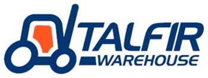

Almacenamiento en altura
Estanterías selectivas y drive-in, con hasta 11 m de altura de almacenaje.
Depósito nacional y aduanero, transporte terrestre y comercio exterior: cuatro servicios integrados en diez hectáreas de Montevideo.
Una empresa familiar que empezó con un depósito, sumó un predio propio, se volvió un parque completo y hoy impulsa un proyecto que transforma el barrio.
Recorrer la historiaUn Depósito Fiscal Aduanero en Parque Guaraní.
Se adquiere el predio de Dr. Pantaleón Pérez, la casa del Parque hasta hoy.
Se construye y se profesionalizan los servicios logísticos.
Limpieza integral y muro de 700 m en el predio lindero.
El proyecto de Itapeby 3170 es declarado Proyecto de Interés Municipal.
27.000 m² cubiertos, con almacenamiento en altura, flota propia y todo lo necesario para el día a día de una operación logística.
Conocer el ParqueEstanterías selectivas y drive-in, con hasta 11 m de altura de almacenaje.
20 camiones con base en el mismo predio, habilitados para cargas peligrosas.
Control permanente del predio, la mercadería y los activos de cada cliente.
Detección y extinción avanzadas, con rociadores sprinkler en cada depósito.
Depósitos habilitados que cumplen rigurosos estándares de seguridad y sanidad.
Salas de reuniones, sala de capacitaciones y espacios para exhibir productos.
Cuatro servicios especializados trabajan coordinados en el mismo predio: la mercadería entra, se guarda y sale rumbo a cualquier destino.
Conocer los serviciosCabecera del Parque Logístico Nacional.
Conocer
23.000 m², con playa de contenedores e ISO tank.
Conocer20 camiones propios y transporte de cargas peligrosas.
ConocerEmbarques FCL y LCL hacia cualquier destino.
ConocerLa mercadería puede pasar por las tres etapas sin salir nunca del Parque.
Itapeby 3170 pasó de ser un problema para el barrio a un parque farmacéutico con acceso propio y espacios nuevos para los vecinos. Fue declarado Proyecto de Interés Municipal en 2025.
Conocer el proyectoEducación, formación laboral y apoyo sostenido a los vecinos del Municipio F: así entendemos nuestro lugar en la comunidad.
Contanos qué necesitás y te ponemos en contacto con el servicio del Parque indicado para tu consulta.